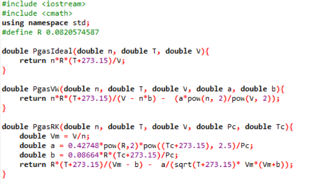
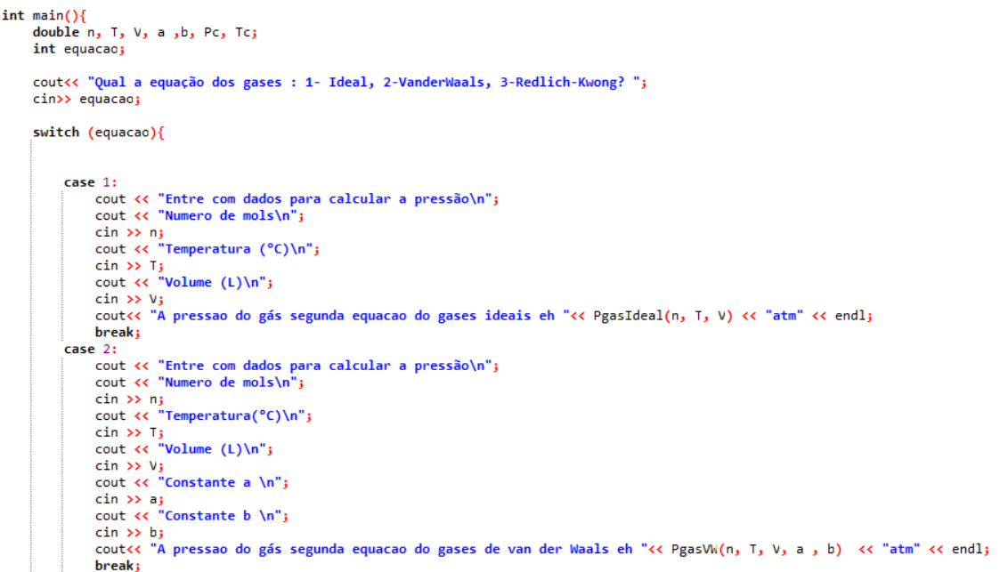
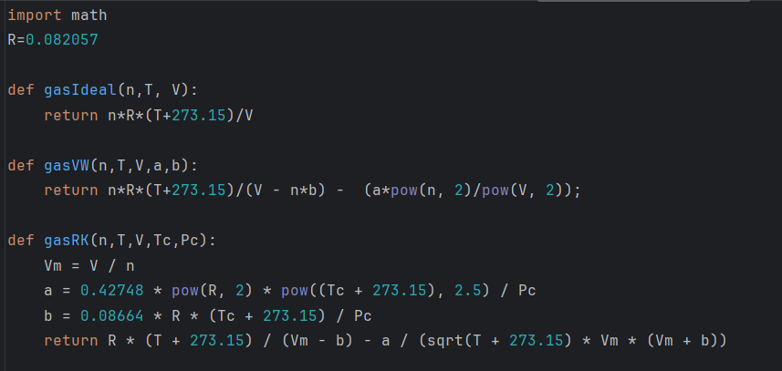
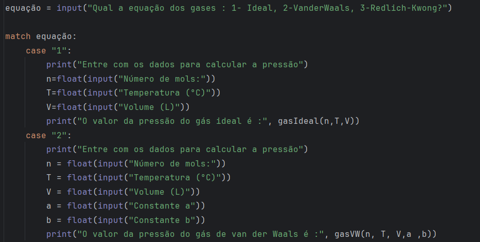

O switch case em C++ é uma estrutura de controle usada para tomar decisões com base no valor de uma expressão. Ele é útil quando se tem várias opções válidas para essa expressão, substituindo o uso de diversos if concatenados. Nessa postagem do Química Proramada vamos usar a estrutura do switch case para elaborar um programa que calcule a pressão de um dado gás segundo três equações distintas : gás ideal, gás de van der Waals e gás de Redlich-Kwong.
Também iremos apresentar o algoritmo do equivalente ao switch case em Python, que é o match case.
Primeiramente, temos que definir as funções de estado que usaremos para calcular as pressões de gás ideal, de gás de van der Waals e de gás de Redlich-Kwong. Essas funções são apresentadas na Figura 1 que apresentada a declaração dessas funções em C++. Note que é necessário chamar a biblioteca cmatch no início do programa para calcular as espressões de potência e raiz quadrada.

Depois de declarar as funções da calculadora de gases, vamos para a função main, onde teremos um trecho inicial na qual o usuário irá fazer a escolha de qual equação será usada. Cada equação é equivamente a um número : 1 - gás ideal; 2 gás de van der Waals; 3 - gás de Redlich-Kwong. Essa opção será lida atarvés do teclado e será atribuída à variável chamada de equacao. Qaundo o usuário escolher a opção 1, será calculada a pressão do gás segundo a equação do gás ideal. O terminal do C++ vai pedir ao usuário as variáveis necessárias para o cálculo da pressão : n (numero de mols), T (temperatura) e V (volume). O comando cin é o comando em C++ que faz a leitura de valores pelo teclado do usuário. Se o usuário escolher a opção 2 para variável equacao, será calculada a presão de van der Waals, sendo necessário, além dos valores n, T, e V, entrar com os valores dos parâmetros a e b da equação de van der Waals. Se o usuário escolher opção 3, serão solicitados os parâmetros Pc (pressão crítica) e Tc (Temperatura crítica), necessários para o cálculo da pressão pela equação de estado de Redlich-Kwong.

Em Python, o equivalente ao switch case é o match case. A mesma calculadora de gases em Python apresenta a estrutura conforme as Figura 3 e Figura 4. Na primeira, é apresentada a declaração das funções dos gases ideal, van der Waals e Redlich-Kwong. Na segunda, é apresentada a estrutura do match case.


Desenvolvimento : Química Programada